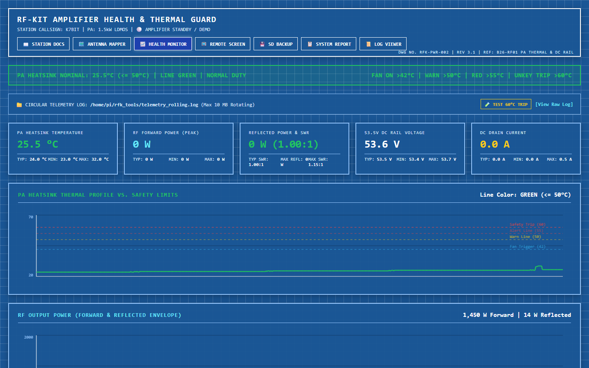

High-Power RF Determinism
Managing 1500W PEP on 160m through 6m requires microsecond determinism and rock-solid controller stability.
Embedded Raspberry Pi Controller
Supervises PTT sequencing, directional couplers, low-pass relays, touch metering, and SimpleRPC.
Pure 64-Bit Debian Trixie
Modern 64-bit kernel guarantees address-space isolation, preemption stability, and active patch streams.
Hardware Protection Interlocks
Hardware watchdogs immediately disengage bias and clamp exciter drive during abnormal RF events.
Operating Note (K7BIT)
A deterministic controller is the foundation of amplifier safety—delay or lockup risks devastating LD MOS transistors during keying.

FIG 1: JRFK STANDALONE MIGRATOR INTERFACE & PHYSICAL DRIVE GUARD

FIG 2: JRFK WEB TOOLS (PORT 8088) - REAL-TIME RF TELEMETRY & METRICS